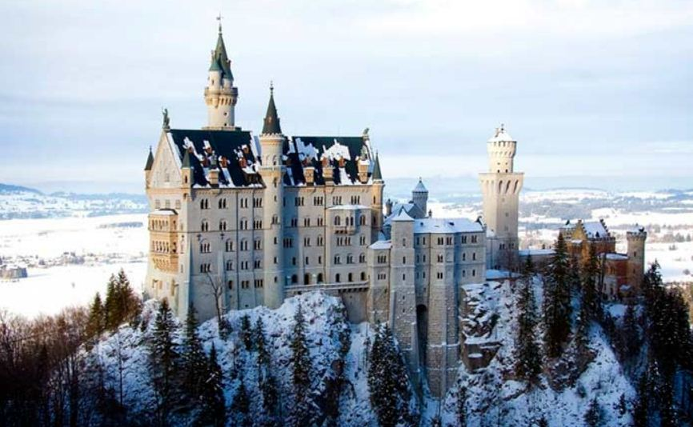
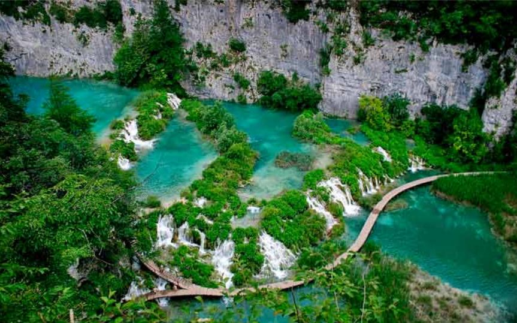
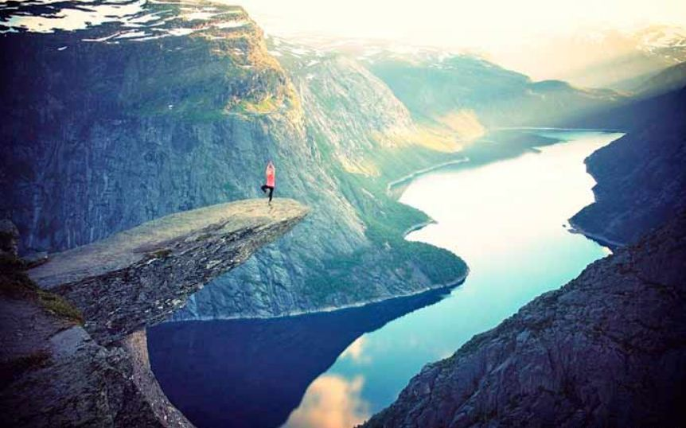
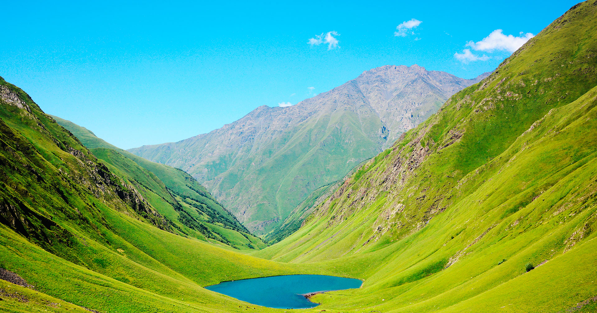

ყოველდღიურ ყოფაში, მუდმივ საზრუნავში, ხშირად გვავიწყდება, რომ ჩვენი საერთო სახლი, დედამიწა ულამაზესი და თვალუწვდენელია. მისი უმშვენიერესი ადგილების ჩამოთვლაც კი შეუძლებელია არა თუ მონახულება. ეს არის ადგილები, რომლებიც თავისი ბუნებრივი სილამაზით სუნთქვას გიკრავს და გულს გიჩქარებს.
გერმანიას ყოველთვის ჰქონდა განთქმული სახელი თავისი არაჩვეულებრივი ციხესიმაგრეებით. მკაცრი და დიდებული ნოიშვანშტაინის ციხესიმაგრე მოგხიბლავთ თავისი ზომებით და ახალი რომანული არქიტექტურული სტილით.
ფოლკლორული ხორვატია ამაყობს ულამაზესი ნაციონალური პარკით, რომელიც გამოირჩევა ჩანჩქერების სიმრავლით, მღვიმეებით, კასკადური ტბებით და მრავალფეროვანი ფლორითა და ფაუნით.
თოვლიან და მიუწვდომელ ნორვეგიასაც აქვს თავისი სამოთხე სახელწოდებით – ფიორდები. თვალწარმტაცი სანაპიროები, რომლებიც აერთებენ ულამაზეს სრუტეებს. ზემოდან დათოვლილი, ქვემოთ კი მწვანე საფარით დაფარული მთებით, რომლებიც თითქოს წყლიდან არიან ამოზრდილი და დარაჯად დგანან ამ ულამაზესი ადგილის დასაცავად.
უნიკალური ტბა ტანია ერთ-ერთი ულამაზესი ადგილია საქართველოში, ის გულგრილს არავის დატოვებს. მისი უჩვეულო ფორმა არის გული, რომელიც დაეცა მიწაზე, რომელშიც აისახება საქართველოს ცა.